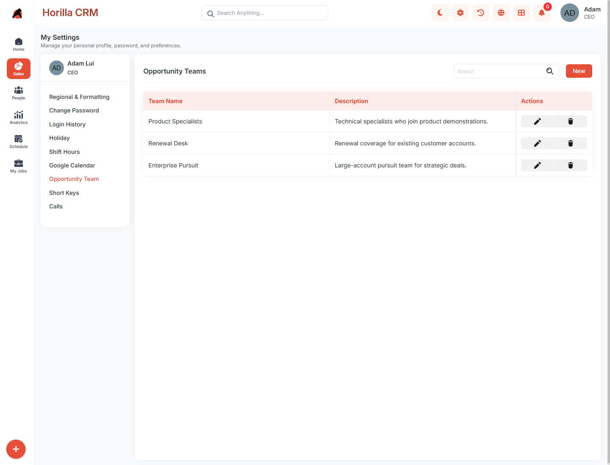
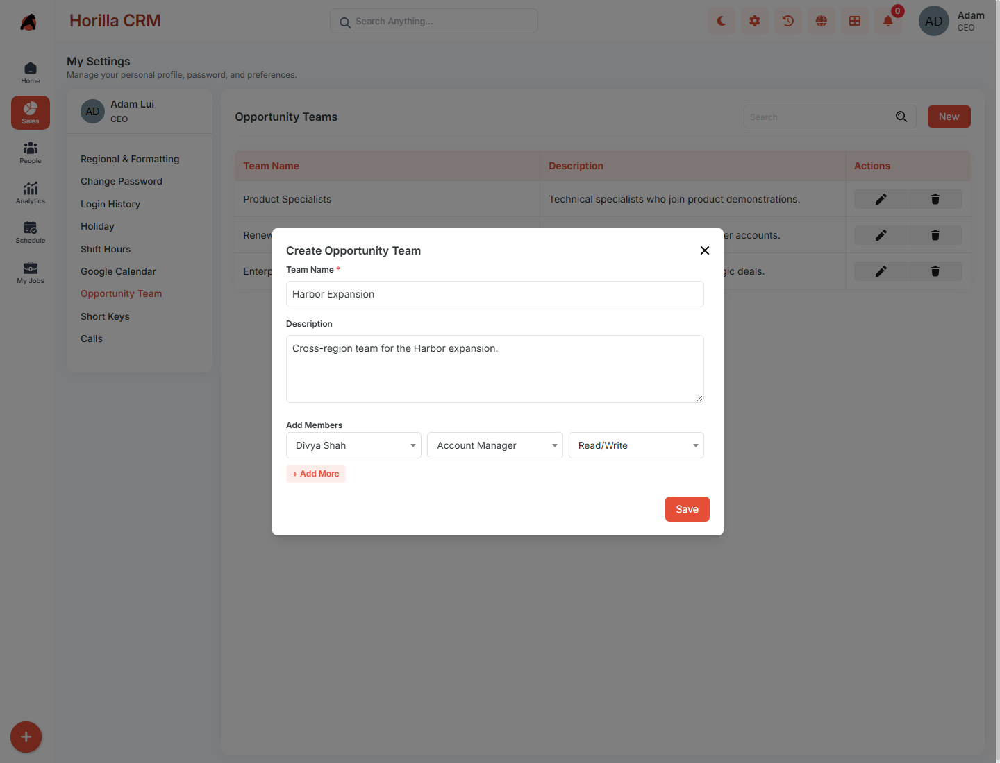
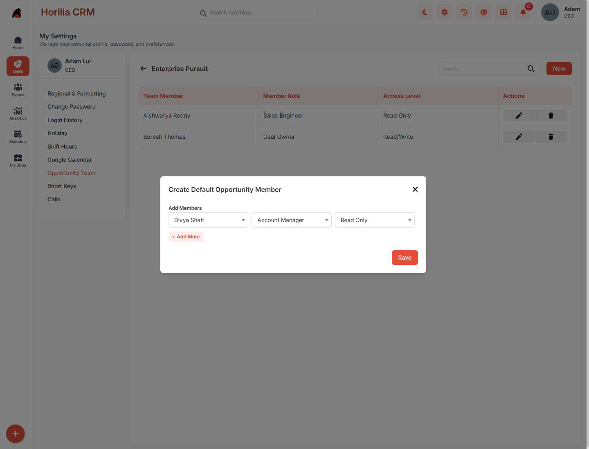

Introduction
The Opportunity Teams module lets an organisation form collaborative sales teams around its opportunities. Every permitted user builds and manages their own teams independently: they create the team structure, add the members and decide each member's access level. Members are given a defined role and a Read/Write access level, so responsibilities, accountability and communication stay clear while opportunity data remains secure.
Company setup for team selling and splits is covered in Opportunity Teams & Splits.
Key Features and Functionalities
Accessing Opportunity Teams
Open the module from Settings → My Settings → Opportunity Team.
The module is available only when Team Selling is enabled for the company.
You can view, create and manage only the teams you created yourself, which keeps each workspace personal and the data private.
1. Opportunity Teams Overview
The page title is Opportunity Teams. Saved teams are listed with Team Name, Description and Actions. New opens the create form. Search filters the list.

2. Create New Opportunity Team
- Click New to open Create Opportunity Team.
- Enter the Team Name and the Description.
- Under Add Members, choose a user, a team role and an access level.
- Click + Add More to add another member in the same setup.
- Click Save to create the team.

Team Creation Form Fields
Basic Information
- Team Name
- A unique, descriptive name for the team.
- Description
- The purpose and scope of the team.
Add Members
Each member row has three choices: the user, the team role and the access level. Roles include Deal Owner, Sales Engineer, Account Manager, Executive Sponsor and Customer Success Manager. Access levels are Read Only, Read/Write and Owner. + Add More adds another row.
3. Team Management and List View
Team List Table Columns
| Column | Shows |
|---|---|
| Team Name | The team identifier. |
| Description | A brief overview of the team's purpose. |
| Actions | The management options available for that team. |
Available Actions
- Edit – change the team details, its members or their permissions.
- Delete – remove a team that is no longer needed.
4. Team Detail View
Click a team name to open its detail page. The header shows the team name and a back arrow. Search finds a member, and New adds one.

Team Information Section
- Team header – shows the team name together with back navigation.
- Search function – finds a specific team member.
New Button
The New button opens Create Default Opportunity Member. Under Add Members, choose the user, the team role and the access level, then click Save. + Add More adds another member in the same form.

Team Member Table
| Column | Shows |
|---|---|
| Team Member | The names of the assigned users. |
| Member Role | The member's role, for example Deal Owner, Sales Engineer or Account Manager. |
| Access Level | Read Only, Read/Write or Owner. |
| Actions | The management options available for that member. |
Member Management Actions
- Edit Member – change the member's role or access level.
- Remove Member – take the member off the team when necessary.